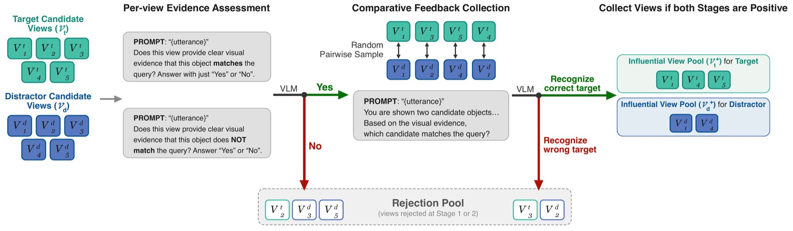
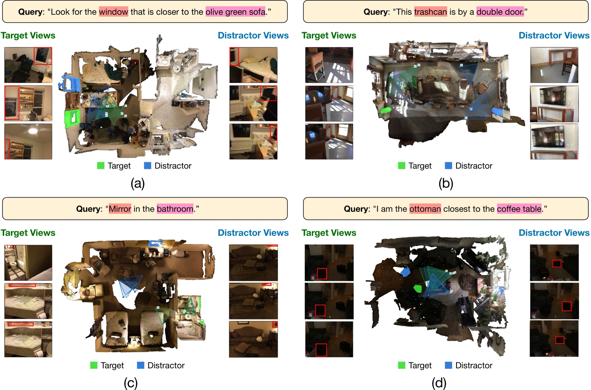
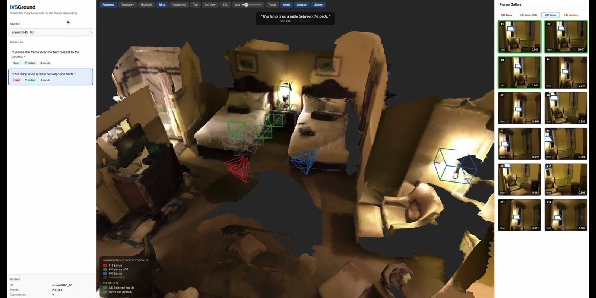

Where to Look Matters: Learning Influential Views for VLM-based 3D Visual Grounding
Abstract
Recent zero-shot 3D visual grounding methods leverage vision–language models (VLMs) to localize objects in 3D scenes from natural language queries. However, these methods typically rely on heuristic rules to select which camera views are provided to the VLM, often prioritizing object visibility rather than grounding relevance. We present IVSGround, a framework that learns Influential View Selection for VLM-based 3D visual grounding. Instead of using fixed heuristics, a lightweight view selector is trained to identify views that provide discriminative evidence for grounding. To obtain supervision signals, we generate training signals using feedback from a reasoning VLM through a two-stage rejection sampling process. During inference, the learned selector predicts query-conditioned influential views for each candidate object, which are then evaluated by a frozen reasoning VLM through comparative grounding. Experiments on ScanRefer and NR3D show that IVSGround consistently improves grounding accuracy over existing zero-shot pipelines, demonstrating that selecting where to look is crucial for effective 3D visual grounding.
Training Signal via Rejection Sampling

Supervision for the view selector is collected in two stages using feedback from a reasoning VLM: (a) per-view evidence assessment identifies views that provide informative grounding evidence for each candidate, and (b) comparative feedback collection performs pairwise queries with these views to obtain preference supervision between competing candidates. Only views passing both stages form the influential view pool used for training.
Qualitative View Selection Examples

Each panel shows a bird’s-eye view of the scene with camera frustums for the target (green) and distractor (blue) candidates, along with the top-ranked views selected by the learned view selector. Red boxes indicate the candidate object in each view. The four queries span different reasoning types: spatial proximity (a), landmark association (b), region-based (c), and comparative distance (d).
Video Presentation
Interactive Demo
Explore IVSGround directly in your browser: inspect Nr3D scenes in 3D, browse the camera views ranked by the learned view selector for each candidate object, and compare IVSGround’s reasoning against the visibility-based baseline.

Launch Interactive DemoDemo Walkthrough
Prefer a guided tour? A three-minute walkthrough of the demo:
BibTeX
@inproceedings{chiang2026ivsground,
title = {Where to Look Matters: Learning Influential Views for VLM-based 3D Visual Grounding},
author = {Chiang, Tsung-Chih and Yang, Hsuan-Kung and Liu, Jou-Min and Liu, Ting-Ru and Huang, Chun-Wei and Kong, Quan and Lee, Chun-Yi},
booktitle = {European Conference on Computer Vision (ECCV)},
year = {2026}
}